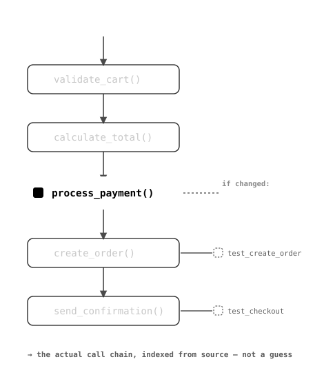

Index a GitHub repository into a real structural graph — files, symbols, dependencies, tests — and see exactly what calls what, and what breaks if you change it.
Python, JavaScript, JSX, TypeScript, and TSX supported today.

Clone a repo and parse it into files, symbols, imports, and calls — not just a text search index.
Ask "what breaks if I change this?" and get a real answer, traced through the dependency graph.
See a symbol's callers and callees as an actual node-link graph, not just a list.
Every repo you index is tied to your account and stays there for your next session.
No setup beyond pasting a link. Indexing runs once; every question after that is instant.
Paste a GitHub URL. The repo is cloned and parsed into files, symbols, imports, and call relationships — a structural graph, not a flat file list.
Browse the file tree or search by symbol name. Every function or class shows its callers, callees, and mapped tests in one view.
Select a symbol and see exactly what depends on it, how far the effect reaches, and which tests actually cover it — before you touch a line.
Developers joining an existing project or team
Interns and new engineers learning a large codebase
Engineers debugging or modifying legacy code
Open-source contributors working in unfamiliar repos